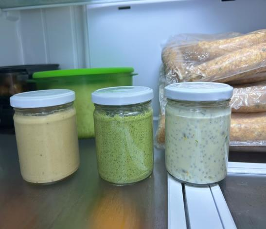

Ingredientes con intención
Combinaciones seleccionadas por su sabor, textura y aporte al concepto de cada receta.
Sauce Lab reinventa el acompañamiento de siempre con cuatro propuestas funcionales, versátiles y creadas a partir de ingredientes cuidadosamente seleccionados.

¡Cremosas! Hechas para combinarCada receta tiene un perfil propio de ingredientes, textura y usos. Seleccione una salsa para conocerla en detalle.
El proyecto nace para explorar salsas funcionales y personalizadas que respondan a distintas preferencias nutricionales y estilos de alimentación, combinando creatividad, nutrición y sabor.
La propuesta investiga nutrición funcional, alimentación personalizada, proteínas vegetales y tendencias plant-based para desarrollar productos diferentes a las formulaciones estandarizadas.
Combinaciones seleccionadas por su sabor, textura y aporte al concepto de cada receta.
Su consistencia tipo dip permite llevarlas a vegetales, panes, wraps, bowls, pasta y más.
Una propuesta desarrollada desde la investigación y la experimentación durante el curso lectivo 2026.
Como dip cremoso para acompañamientos frescos.
Yomi, Raccolto y Eden pueden sumar una nueva capa de sabor.
Una forma práctica de incorporar textura y personalidad.
Mr. Rosso se inspira en el perfil clásico de la salsa pomodoro.